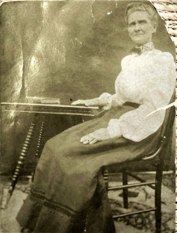
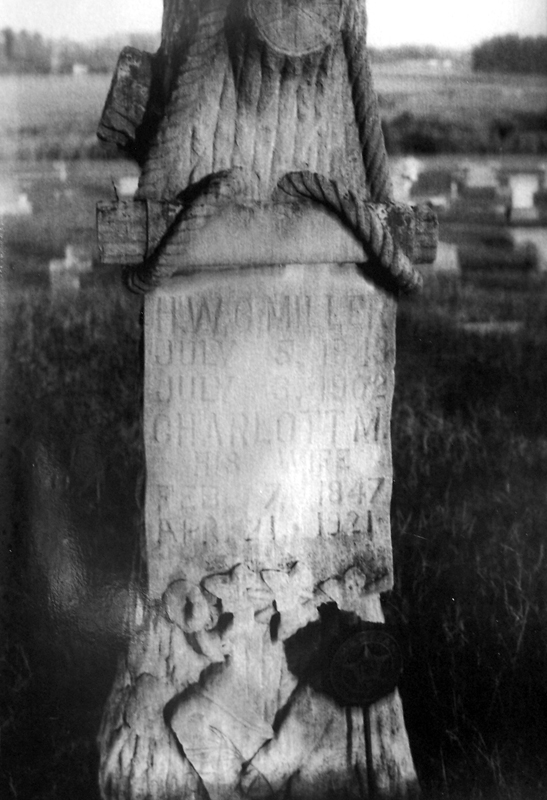
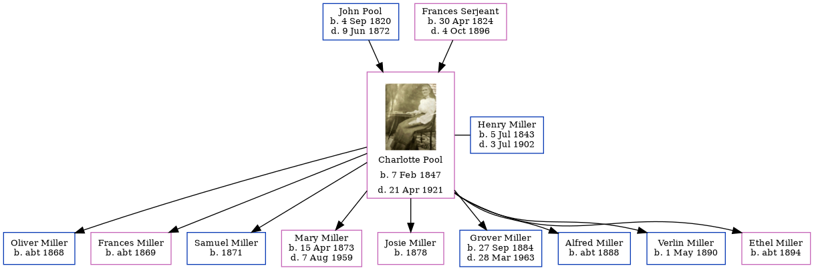

Charlotte Maria Miller (née Pool) 1847 - 1921
[ Home ] | [ Calendar ] | [ Surnames Index ] | [ Family History ]The daughter of John Pool and Frances Serjeant, Charlotte Pool, the second cousin four-times-removed on the mother's side of Nigel Horne, was born in Fort Wayne, Allen, Indiana, USA on Feb 7, 18471,2 and married Henry Miller (with whom she had 9 children: Oliver, Frances, Samuel, Mary Ann, Josie, Grover Robert, Alfred, Verlin and Ethel H) in Clay, Indiana, USA on Oct 24, 18653.
Throughout her life, Charlotte lived in several places: at her birthplace on Jun 1, 18501; in Clay on Jun 1, 18606 and on Jun 1, 18802 (the same place as her parents had been living on Jun 1, 1860); in Jefferson, Owen, Indiana on Jun 3, 19004; and on Howesville Road, Lewis, Indiana on Jan 12, 19205 following the death of her husband on Jul 3, 1902.
She died on Apr 21, 1921 in Howesville, Indiana and was buried there at Peavey Cemetery after Apr 21, 1921.
Parents
- John Edward was born on Sep 4, 1820
- Frances Elizabeth was born on Apr 30, 1824
Children
- Oliver was born c. 1868
- Frances was born c. 1869
- Samuel was born in 1871
- Mary Ann was born on Apr 15, 1873
- Josie was born in 1878
- Grover Robert was born on Sep 27, 1884
- Alfred was born c. 1888
- Verlin was born on May 1, 1890
- Ethel H was born c. 1894
Citations
- Us Census 1850 - Findmypast (was age 3)
- Us Census 1880 - Findmypast (was age 33 and the wife of the head of the household)
- United States Marriages - Findmypast
- US Census 1900 - Findmypast (was the wife of the head of the household)
- US Census 1920 - Findmypast (was age 72 and the mother of the head of the household)
- US Census 1860 - Findmypast (was age 13 and the daughter of the head of the household)
Media
Charlotte Maria Pool

Henry Miller - Charlotte Pool - gravestone

United States Marriages - R_1128536728/2
United States Marriages - FS/MAR/37373275/2
US Census 1850 - USC/1850/004193367/00278/028
US Census 1900 - USC/1900/004118649/00457/036
US Census 1920 - USC/1920/004964848/00152/095
Family Tree
Generated by Ged2Site. Last updated on Jul 20, 2025